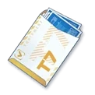
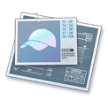

EQUIPMENT
装備設計図の周回計算機
目標の Tier まで上げるのに要る設計図とクレジットを出して、足りないぶんを埋めるのにいちばん効率のいい任務を AP あたりで並べます。
EQUIPMENT
目標の Tier まで上げるのに要る設計図とクレジットを出して、足りないぶんを埋めるのにいちばん効率のいい任務を AP あたりで並べます。
AronaBotの使い方/ツール/装備設計図の周回計算機
部位ごとに、今の Tier から目標の Tier まで、何個ぶん上げたいかを入れます。お守り・腕時計・ネックレスは T9 が上限です。
分かるぶんだけ入れてください。入れた数は必要量から引かれます。

設計図選択ボックス熟達証書ショップの「T◯装備設計図選択ボックス」です。Tier は決まっていて、部位が自由。入れた数は、不足がいちばん多い部位から順に差し引きます。T2 から T8 までしかありません。

万能設計図任務で落ちる「◯◯の万能設計図」です。選択ボックスとは逆で、部位は決まっていて、Tier が自由。ただし高い Tier ほど交換レートが悪くなります。
1 枚の設計図と交換するのに要る枚数です。低い Tier から充てるのがいちばん得なので、ここもそう計算しています。
足りない設計図が 1 AP あたり何個手に入るかで並べています。足りている部位のドロップは数えていません。その面で落ちる万能設計図も、設計図に換算して数に入れています——高い Tier の面ほど大量に落ちるので、これを外すと低い Tier の面ばかりが上に来ます。
目標に届くまでに要る枚数です。橙色は足りていないもので、薄いのは足りているものです。
ティアアップの材料とクレジットは、ゲームのデータそのままです。
Excel/EquipmentExcelTable.json の RecipeId から
Excel/RecipeIngredientExcelTable.json を引いています。
1 部位を T1 から T10 まで上げると、設計図は T2 40 ／ T3 45 ／ T4 50 ／ T5 55 ／ T6 65 ／ T7 65 ／ T8 60 ／ T9 50 ／ T10 60 枚、クレジットは 711,500 です。 T10 まである 6 部位はどれも同じ表になります。
お守り・腕時計・ネックレスは T9 が上限です。データ上、この 3 部位には T10 の装備もレシピも存在しません （帽子・手袋・靴・カバン・バッジ・ヘアピンは T10 まであります）。 そのぶん T1 から上げ切るのに要るクレジットも 536,500 で、T10 まである部位の 711,500 より少なくなります。
ドロップは SchaleDB の
data/jp/stages.min.json から、Amount × Chance を足して期待値にしています。
初回クリア報酬と星の報酬（RewardType が付いている行）は、周回では出ないので数えていません。
たとえば Area 4-1 の帽子 T2 設計図は「確定 1 個」＋「20% でもう 1 個」なので 1.2 個です。
Hard は Normal のちょうど 2 倍落ちますが、AP も 2 倍（10 → 20）なので、AP あたりの効率は同じです。
違うのは組み合わさる部位なので、狙いによってどちらが良いかが変わります。
ドロップだけ ba-data ではなく SchaleDB を見ています。
2026-04-21 に実装された万能設計図が ba-data の jp ブランチにまだ入っておらず、
CampaignStageRewardExcelTable.json を探しても 501000〜509000 が 1 件も出てこないためです。
レシピ・箱の比率は今までどおり ba-data から取っています。
「設計図選択ボックス」と「万能設計図」は別のものです。
選択ボックス（150028〜150033、150041）は熟達証書ショップのもので、
Tier が決まっていて部位が自由、T2 から T8 までしかありません。
万能設計図（501000〜509000、Tier: 0）は任務で落ちるもので、
部位が決まっていて Tier が自由です。
部位ごとの需要は、生徒 — 人の装備欄から数えています。 ヘアピン 175 ／ 腕時計 161 ／ 帽子 102 ／ 靴 99 ／ ネックレス 75 ／ 手袋 73 ／ カバン 56 ／ バッジ 43 ／ お守り 38。 ネックレスを 1 としたときの比は 2.33／2.15／1.36／1.32／1.00／0.97／0.75／0.57／0.51 で、 ブルアカ Wiki が別に数えた比 （260 人時点で 2.32／2.12／1.35／1.34／1／0.97／0.76／0.58／0.53）とほぼ一致します。 ヘアピンと腕時計は、ふつうに集めるだけでは足りません。
ドロップの期待値も Wiki の実測と合っています。 Area 28〜29 を 3 倍期間に 200 周した記録では、T10 が 528 枚（1 周あたり 0.88）、T8 が 306 枚（0.51）、 万能設計図が 22,530 枚（1 周 37.6）。このツールが出す 1 周あたりは T10 0.86 ／ T8 0.50 ／ 万能設計図 37.5 です。
万能設計図の交換レート（T2 は 2 枚、T10 は 50 枚）だけ、ゲームのデータに見つかりませんでした。 ブルアカ Wiki の「装備について」の表から取っています。 この表は「全て万能設計図で補う場合の各 Tier の必要数」も載せていて、 T2 80 ／ T3 135 ／ T4 250 ／ T5 385 ／ T6 650 ／ T7 975 ／ T8 1,200 ／ T9 1,500 ／ T10 3,000。 上のレシピの枚数（40 / 45 / 50 / 55 / 65 / 65 / 60 / 50 / 60）にレートを掛けた値と、9 つとも一致します。
箱（GachaGroup）で出る枠も数えています。
中身と比率は Excel/GachaElementExcelTable.json にそのまま入っているので、
推測せずにその比率で期待値へ畳んでいます。
ここで出る「T1 の装備そのもの」は設計図ではないので数えていません。
data.js は scripts/build-tool-data.py が作っています。
GitHub Actions が毎日回しているので、生徒・装備・ステージが増えれば自動で追いつきます。
Area 28 まで入っています。SchaleDB のステージ表は Area 26 までなので、
そこだけ見ていると T10 の設計図が落ちる場所を丸ごと見落とします。
このツールは ba-data の CampaignStageExcelTable から作っているので、Area 28 も入っています
（Area 28 のステージ名だけ日本語が取れていないので「Area 28-1」と出ます）。
出典 — electricgoat/ba-data（jp、 —）、SchaleDB（ステージ名とアイコン）、 ブルアカ攻略 Wiki「装備一覧」（ティアアップの合計）。